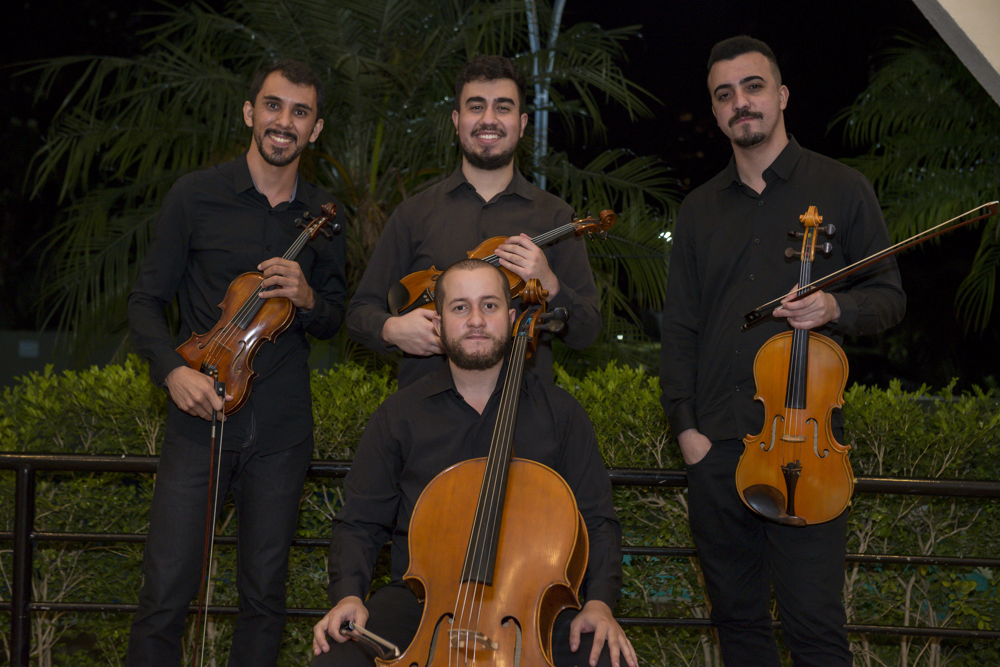

Na música, cada nota carrega emoção, cada silêncio é tão importante quanto o som. É por isso que acreditamos que a arte é suprema: porque tem o poder de transformar instantes em eternidade, e experiências simples em memórias inesquecíveis.

O Quarteto Olympia foi criado em 2019 com o objetivo principal de se divertir fazendo música juntos, além do envolvimento que já tinham dentro da Orquestra. A ideia para o nome surgiu a partir da inspiração em um famoso grupo de amigos conhecido como Academia Olympia, do qual fazia parte o renomado físico Albert Einstein. Einstein também era violinista, e seu grupo costumava se reunir para conversar sobre física e filosofia. Acreditamos que a música é a arte suprema, pois tem o poder de despertar diferentes sensações e emoções em quem a ouve.
Gilmar Santos — Violino
Iniciou seus estudos com o professor Ricardo Camatari em Campinas. Tocou em projetos orquestrais como a OFPC,
participou de concertos da Orquestra Sinfônica Jovem do IASP e foi membro da Orquestra Filarmônica de Valinhos.
Foi aceito para ser aluno do Instituto Baccarelli onde estudou com Amanda Martins, Juan Rossi e Edgar Leite.
Gabriel Geglio — Violino
Iniciou seus estudos no violino na igreja aos 8 anos. Em 2015 ingressou no Instituto Baccarelli integrando
a Orquestra Juvenil Heliópolis. Teve a oportunidade de tocar sob batuta de grandes maestros como Marin Alsop
e Isaac Karabtchevsky. Atualmente é aluno do professor Edgar Leite.
Guilherme Santana — Viola
Violista do Quarteto Olympia, também atua como Líder de Soluções Tecnológicas. Iniciou seus estudos musicais
aos 14 anos na Orquestra Sinfônica Jovem de Mogi das Cruzes. Em 2015 foi aceito no Instituto Baccarelli,
integrando a Orquestra Juvenil Heliópolis. Atualmente estuda com Alexandre Razera.
Diego Pereira — Violoncelo
Estudou na Fundação das Artes em São Caetano. Em 2017 ganhou em 1º lugar o concurso Jovem Solistas da Fundação
das Artes. Ingressou no Instituto Baccarelli na Orquestra Sinfônica Heliópolis sob regência do maestro Isaac Karabtchevsky.
Hoje é músico da Orquestra Experimental de Repertório do Theatro Municipal.